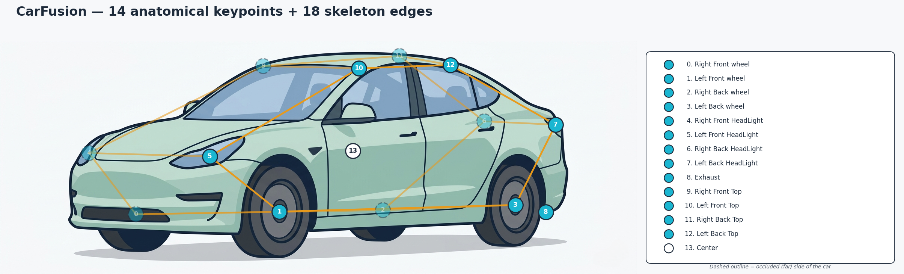
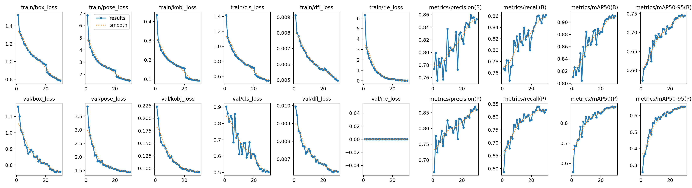
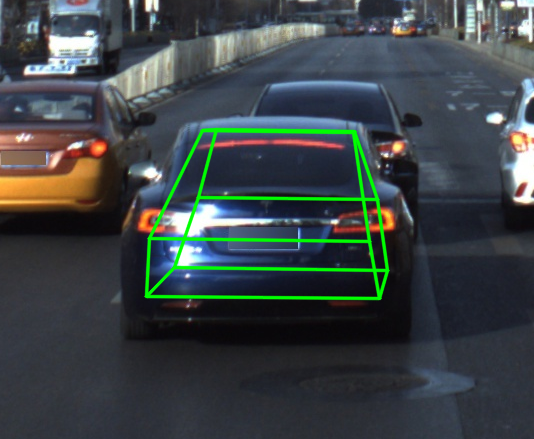

Back to README · Architecture →
Usage and evaluation guide
Dataset
CarFusion - a multi-view traffic-scene dataset from Carnegie Mellon University (Dinesh Reddy, Minh Vo, and Srinivasa Narasimhan, CVPR 2018) with 14 keypoint annotations per car. The raw release is pre-converted to COCO-keypoints JSON via scripts/convert_carfusion_to_coco.py, and src/vehicle_keypoints/data/prepare.py applies a scene-level 90/10 split across the 8 training scenes (val = car_craig2, the other 7 go to train) so no scene appears in more than one partition.
Resulting image counts: 16,713 train / 3,474 val / 12,761 test. CarFusion is © CMU and released under its own research-only license.
Results
Test-set metrics on CarFusion test split (12 761 images, 42 706 predictions):
| Model | OKS-mAP | OKS-mAP50 | PCK@0.05 |
|---|---|---|---|
| YOLO26-pose (main) | 50.4% | 70.4% | 76.1% |
| ViTPose-S (reference run) | 0.1% | 0.4% | 13.7% |
OKS computed via pycocotools with uniform kpt_oks_sigmas=0.05 (CarFusion has no established anatomical sigma calibration for 14 non-human keypoints); PCK@0.05 with a bbox-diagonal threshold. ViTPose-S baseline is honestly under-trained (15 epochs, val=train in scripts/finalize_v010.py, 85M params typically need 100+ epochs) - kept as a reference point but not representative of ViTPose capacity. See reports/metrics_summary.json for the full numbers.
Visualizations
14-keypoint CarFusion skeleton (wheels, head- and tail-lights, roof corners, exhaust, body centre):

Flip-augmentation fix - left/right keypoints are correctly swapped under horizontal flip:

Monocular 3D pose (PnP) baseline
The 14 keypoints lift to a full 6DoF vehicle pose by solving PnP (cv2.solvePnPRansac) against a single rigid metric car wireframe - the first 14 points of the ue5-vehicle-synth 24-point schema. We run the CarFusion detector on the real ApolloCar3D validation split (272 frames) and compare the monocular PnP pose against ApolloCar3D's 3D ground-truth car poses:
| Metric | Value |
|---|---|
| Rotation error, median | 13.6° |
| Rotation error, mean | 51.6° |
| Translation error, median | 3.13 m |
| Cars within 10° rotation | 37.8% |
| Cars within 2 m translation | 35.7% |
| Matched cars / detector hit-rate | 230 / 25.1% |

Honest caveats: this is a single mean-sedan wireframe (real cars vary in size and shape, an intrinsic error source), and the detector is trained on CarFusion then evaluated on ApolloCar3D - a real domain shift, which is why the hit-rate is 25% (ApolloCar3D also labels every distant and parked car). The model-to-Apollo frame alignment is a fixed rotation calibrated by SO(3) rotation averaging over matched cars (median rotation error 109° -> 16° on the calibration subset). The high rotation mean is the tail of PnP front/back flip ambiguities. This rigid-PnP baseline is the geometric foundation for the next milestone - a trainable, shape-aware monocular 3D model. Reproduce with uv run python scripts/eval_pose3d.py; numbers in reports/pose3d_apollo.json.
3D ground truth from the ApolloScape 3D Car Instance dataset (the ApolloCar3D benchmark, Song et al., CVPR 2019) - 79 CAD car types with per-car 6DoF poses and RIEGL-CS6 camera intrinsics; research-only license. We use only its 3D pose ground truth, not the CAD shapes.
Synthetic data: ue5-vehicle-synth
The 24-point schema and synthetic training data come from the sister project ue5-vehicle-synth, which generates keypoint-labeled vehicle frames inside Epic's City Sample (Unreal Engine 5).

Demo: each scene is a single vehicle driving normally, then with its 24-point keypoint skeleton, then as a wireframe ghost. Full video and pipeline at
ue5-vehicle-synth.
Quick Start
uv sync --all-groups
bash scripts/sync_data.sh "D:/ProjectsData/Car Key Point/datasets/carfusion"
uv run python -m vehicle_keypoints.data.prepare --raw data/raw --out data/processed
make train # main YOLO26-pose (~90 min RTX 3080)
make evaluate # OKS-mAP + PCK on test
make serve # FastAPI on :8000
Full Training Commands
Main - YOLO26-pose:
uv run python -m vehicle_keypoints.training.train +experiment=sota trainer.max_epochs=100
Reference run - ViTPose-S (top-down, Lightning):
uv run python -m vehicle_keypoints.training.train_vitpose model=baseline trainer.max_epochs=30
Inference
from huggingface_hub import hf_hub_download
from vehicle_keypoints.inference.predict import Detector
ckpt = hf_hub_download(
repo_id="kiselyovd/vehicle-keypoints", filename="weights.pt",
revision="d277c2d8c9b5ee49d9fed85fe43bdd72b16a0f06",
)
det = Detector.from_checkpoint(ckpt)
detections = det.predict("car.jpg")
for d in detections:
print(d["bbox"], d["score"], len(d["keypoints"]))
Each detection is a dict with an (x, y, width, height) bbox, a detector score, and a list of 14 (x, y, score) keypoints aligned to the CarFusion skeleton.
Serving
docker compose up api
JSON response (keypoints + boxes):
curl -X POST -F file=@car.jpg http://localhost:8000/detect
Overlay PNG (skeleton drawn on the input image):
curl -X POST -F file=@car.jpg "http://localhost:8000/detect?overlay=true" -o overlay.png
Project Structure
vehicle-keypoints/
├── configs/ # Hydra
├── data/ # raw + processed + sample (CI)
├── docs/ # MkDocs Material
├── scripts/ # convert_carfusion_to_coco.py, build_sample_data.py, publish_to_hf.py, ...
├── src/vehicle_keypoints/
│ ├── data/ # prepare.py, coco_dataset.py, datamodule.py
│ ├── models/ # factory.py, vitpose.py, lightning_module.py
│ ├── training/ # train.py (YOLO), train_vitpose.py (Lightning)
│ ├── evaluation/ # evaluate.py (OKS-mAP + PCK)
│ ├── inference/ # predict.py, overlay.py
│ └── serving/ # FastAPI /detect
└── tests/
Intended Use
Computer-vision research and education only. CarFusion is small, single-domain, and not representative of all driving conditions. Not suitable as a primary sensor for autonomous driving; not safety-certified.
License
Repository code is MIT. CarFusion and ApolloCar3D have their own research-use terms. The Ultralytics dependency and model artifacts have separate licensing terms; review those alongside the model card before reuse.